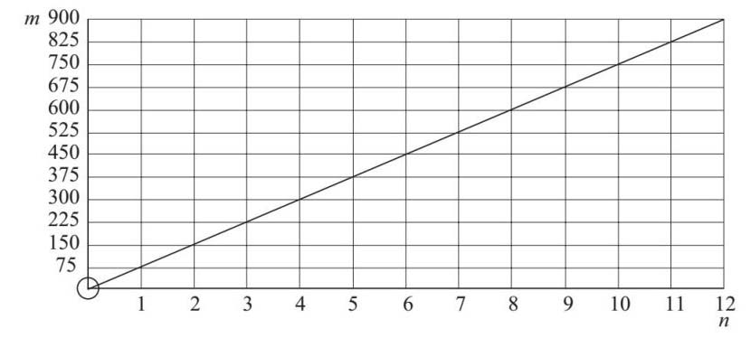
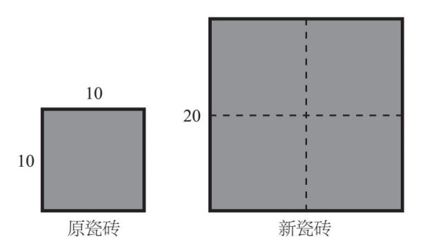
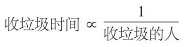
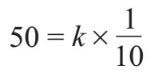
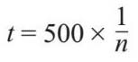
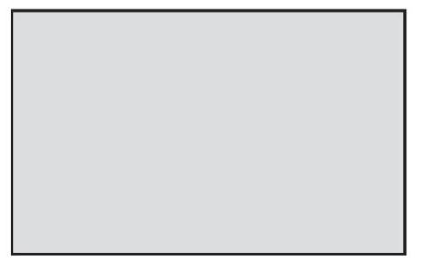
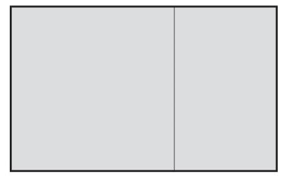
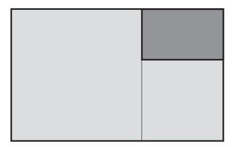
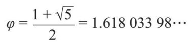

等于50），所以我的公式变成：
等于50），所以我的公式变成：比例的概念似乎是显而易见的，但也并非总是如此。你准备了4个人的餐点，但当你知道有8个人要来吃晚餐时，你的本能反应就是随着客人数量的加倍，餐点也要加倍。这是因为客人的数量和餐点的量是成比例的。但是如果其中一个客人带了一个朋友，总数增加到9人呢？突然间，事情就不那么简单了。
在数学家看来，这表示客人的数量和我需要准备的意大利面的量之间存在着一定的关系。如果原来需要300克意大利面，那么我可以这样计算我应准备多少餐点：
如果4位客人需要300克意大利面，
1位客人就需要300克/4=75克意大利面，
所以9位客人需要75×9=675克意大利面。
这种方法叫作整体法。我们先算出一人的餐量，再计算出最后的答案。还有一种方法是列出一个求所需面食的公式。然后，不管你有多少客人，都可以方便地计算出总数。假设客人的数量是n ，所需的面食质量是m ，数学家为得出公式，第一步就是写出：
m ∝ n
这个符号的意思很简单，即“成正比”。我们还没有一个可用的公式，但已经列出了基本假设，现在需要添加一些数字信息。在整体法中可以看到，一个客人需要75克意大利面，然后再乘以客人的数量，就得到了需要的总数。我们现在有n 个客人，所以我的公式就变成：
m =75×n
在这个例子中，75叫作比例常数，它把两个变量m 和n 联系起来。
在这个例子中，客人的数量和面食的数量呈线性比例关系。这是因为两者的关系可以被绘制成穿过原点（图的左下角，其中m 和n 都是0）的直线：

美国军方F–22猛禽是战斗机中的佼佼者。它集中了空气动力学、工程和航空领域的最新研究成果，几乎不可能被雷达探测到，并配备了高性能计算机，可以管理飞机的方方面面。
但计算机若崩溃就会造成比较大的问题。
这件事发生在2007年2月。12架F–22战斗机从夏威夷的基地飞往日本，它们越过了国际日期变更线。这条线从美国阿拉斯加州和俄罗斯东部中间向南穿过太平洋，绕过岛屿群，经过新西兰等地。如果飞机从东飞到西，就会损失24个小时的时间，这12架飞机就遇到了这种情况。
美国军方未公布究竟是哪个地方出了问题，但我怀疑是飞机可能突然无法计算飞机运行的变化率。由于多个系统都报出了异常参数值，所以飞机的导航和通信系统完全失灵。幸运的是，它们当时在空中加油机附近，可以很快自行飞回位于夏威夷的基地。造价1.48亿美元的飞机，竟然不能随便飞！
不是所有成比例的数都会形成一条直线。想象一下，我的公司是生产和销售方形瓷砖的，瓷砖的长度明显与其面积有关，但两者的关系不是线性的。如果我把瓷砖的长度加倍，面积就增加到原来的4倍：

事实上，因为瓷砖的面积是长度的平方，所以两者的关系就是：
面积∝长度2
意大利面和瓷砖这两个例子中涉及的都是正比例关系——随着一个值的增加，另一个值也成比例地增加。反比例是指当一个值增加时，另一个值会成比例减小。例如，在音乐节工作的收垃圾小组，他们清理垃圾的时间会随着收垃圾人数的增加而减少。在这种情况下：

如果我知道10个人需要50个小时才能收完垃圾，我就可以通过引入一个比例常数，我称之为k ，把这个关系变成一个公式，即：

从这里我可以看到k
=500（500乘以
等于50），所以我的公式变成：

其中t 是收垃圾的时间，n 是收垃圾的人数。有一个古老的问题：“如果8个挖掘机挖8个洞需要8个小时，那么1个挖掘机挖1个洞需要多长时间？”我们的大脑中富有诗意的部分很容易将答案锁定为“1”，但其实数学计算会给出一个不同的答案。正确的答案应该是8个小时。整体法可以用来解释“工时”的概念——1个人1个小时能完成多少工作。8个挖掘机，8个小时，8个洞清楚地表明每1个挖掘机在8小时内管理1个洞。因此，挖1个洞的任务是8小时。
日常中，比例通常指的是物体长度和宽度的比较。某些事物的相对比例有时是令人赏心悦目的。几个世纪以来，许多数学家、科学家、哲学家、建筑师、设计师和艺术家都对这种现象着迷。
几何之父欧几里得（活动期：约公元前300年），是第一个描述现在被称为“黄金比例”的人，黄金比例可以使事物看起来颇具美感。他考虑的是线，但我认为如果我们以矩形为例，更容易欣赏它的美。

上面这个矩形的宽度和高度正好符合黄金比例。很多人说，这使它看起来非常令人赏心悦目，建筑师利用这种比例设计了从中世纪清真寺到现代建筑的很多作品。瑞士建筑师查尔斯–爱德华·让纳雷（Charles-Édouard Jeanneret，1887—1965），他的另一个名字更广为人知——勒·柯布西耶（Le Corbusier），就在作品中广泛使用了这个比例。
这个矩形的主要特征是，如果我把它切成一个最大的正方形和一个矩形，那么这个小矩形和原始矩形的比例也是相同的。

如果我在较小的矩形上重复这个过程，可能更容易看到：

阴影部分的矩形和原始矩形的比例也相同。如果这张图让你想起了彼埃·蒙德里安（Piet Mondrian，1872—1944）的作品（这位荷兰画家以几何分割的抽象画而闻名），也是顺理成章的。他想画出最令人愉悦的形状，他的作品也符合黄金比例。
为什么这个矩形好看？没有人能完全确定，但是美国工程师阿德里安·贝扬认为，我们的眼睛已经进化到会很快地识别出这个比例，这使我们的大脑能够更容易地处理信息。因此，我们在无意识中发现符合黄金比例的形状、图片、建筑物、脸更美。
黄金比例在数学中非常重要，所以像π和e 一样，它也被赋予了一个单独的字母来表示：φ ［发音为“phi”，和“eye”（眼睛）押韵］，这是古希腊建筑师和雕塑家菲迪亚斯（Phidias，约前480—前430）的名字中的第一个字母，菲迪亚斯是古典希腊建筑之父。像π和e 一样，φ 也是一个无理数：

（计算方法见第17章）
所以，一个长方形只要长是宽的一倍半多一些，就会很好看。人们认为脸的长度和宽度如果成黄金比例，就更有吸引力。你还可以下载应用软件，通过面部识别技术来分析照片，以确定你和你的朋友有多美！